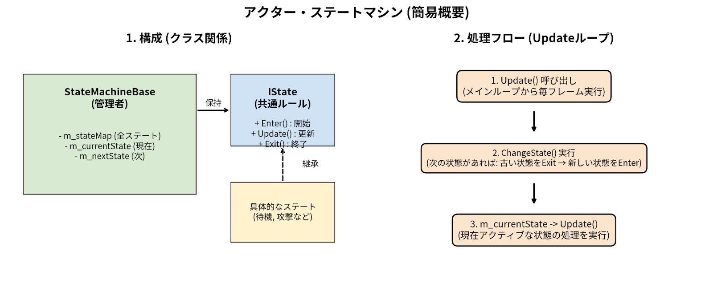

| 項目 | 内容 |
|---|---|
| 氏名 | 藤谷 尊哉 |
| 学校 | 河原電子ビジネス専門学校 |
| 学科 | ゲームクリエイター科 |
| メール | ca01254018@st.kawahara.ac.jp |
| 長所 | ・正確かつ丁寧な作業: 見落としがちな細部まで気を配り、不具合の少ない確実な成果物を制作します。 ・粘り強い探究心: トラブル時も焦らず冷静に原因を分析し、根本的な解決に至るまで粘り強く取り組みます。 |
| 趣味 | ・ゲーム: 『原神』『スプラトゥーン』など。最近は『キングダム ハーツ』にハマっています。 ・音楽鑑賞・カラオケ: 米津玄師さんの楽曲が好きで、カラオケでもよく歌います。 ・吹奏楽: 元吹奏楽部（トロンボーン担当）。演奏できていませんが、いつか演奏も再開したいです。 ・映画鑑賞: アニメ作品が多いですが、サスペンスやドラマ映画なども幅広く観ます。 |
| 項目 | 内容 |
|---|---|
| タイトル | ぺんたくと |
| 制作人数 | 4人 |
| 製作期間 | 2025年4月～現在 |
| ゲームジャンル | 3Dアクション |
| プレイ人数 | 1 |
| 対応ハード | PC (Windows 11) / Xbox コントローラー |
| 使用言語 | C++ |
| エンジン | BeastEngine（学校内製エンジン（k2EngineLow） / DirectX12） |
| 使用ツール | Visual Studio 2026 Visual Studio Code Adobe Photoshop 2026 3dsMax 2026 Effekseer GitHub Fork |
| GitHub URL | https://github.com/TakebayashiNaoya/ProjectBeast |
| Youtube URL | https://youtu.be/daK2kwv6Td4 |
Actor.h / .cppActorStateMachine.h / .cppActorStatus.h / .cppIMasterParameter.h / .cppParameterManager.h / .cppStateMachineBase.h / .cppCharacterBase.h / .cppCharacterParameter.h / .cppCharacterStateMachine.h / .cppCharacterStatus.h / .cppPenguinAnimationData.h / .cppPenguinBase.h / .cppPenguinIState.h / .cppPenguinParameter.h / .cppPenguinStateMachine.h / .cppPenguinStatus.h / .cppChildPenguin.h / .cppChildPenguinAIController.h / .cppChildPenguinManager.h / .cppChildPenguinParameter.h / .cppChildPenguinStateMachine.h / .cppChildPenguinStatus.h / .cppChildPenguinTypes.hClumsyChildPenguinIState.h / .cppClumsyChildPenguinStateMachine.h / .cppDaddyPenguin.h / .cppDaddyPenguinController.h / .cppDaddyPenguinIState.h / .cppDaddyPenguinParameter.h / .cppDaddyPenguinStateMachine.h / .cppDaddyPenguinStatus.h / .cppCameraCommon.h / .cppCameraController.h / .cppCameraManager.h / .cppCameraSteering.h / .cppIStage.h / .cppStageSystem.h / .cppCPReactionAnimStatus.h / .cppCPReactionMenu.h / .cppCPReactionSystem.h / .cppCPReactionStatus.h / .cppMasterCPReactionParameter.h / .cppInGameStartingAnimLogic.h / .cppSystemPacket.h / .cppMasterWpWarningParameter.h / .cppWpWarningAnimStatus.h / .cppWpWarningMenu.h / .cppWpWarningStatus.h / .cppWpWarningSystem.h / .cppJsonConverter.h / .cppゲーム内の各種数値をC++コードから分離し、ゲームを実行したままリアルタイムに変更を反映させるプランナー向けのデバッグ環境を構築しました。
JsonConverter クラスにより読み取り処理を簡略化。ファイルの更新日時を監視し、即座に変更を反映するホットリロードを実現しました。ParameterManager にロックフラグを実装。デバッグの利便性とゲーム仕様を両立しました。危険エリアへの警告（WpWarning）や、子ペンギンの感情表現（CPReaction）など、多数のUIを効率的に管理するシステムを構築しました。
StagePacket を設計。機能追加時に既存のコードを汚さないクリーンな設計を徹底しました。m_layouts コンテナで一元管理し、長時間のプレイでも安全な設計にしています。
100羽の群衆AIを安定して制御するため、ポリモーフィズム（多態性）を活用した状態遷移システムを構築しました。

可変フレームレート環境下での動作安定性と、群衆AIを処理落ちさせないための最適化を追求しました。

LengthSq(): 100羽のペンギンの距離計算やゼロ判定において、重い平方根計算を排除し「距離の二乗」で比較処理を徹底。致命的な処理落ちを防ぎました。Quaternion::Multiply と Slerp を使い、滑らかに吸い付くビジュアルを実現しました。親ペンギンに追従する子ペンギンの隊列において、数学とアルゴリズムを用いて整然とした美しい陣形を構築しました。

sin と cos を用いて重なり合わない綺麗な同心円状の目標座標（最大100個）を動的に生成しています。std::stable_sort を活用した優先配置: 「甘えん坊タイプは内側に配置する」という要件に対し、他のペンギンの「隊列参加順」を崩さない安定ソートを採用し、自然な隊列形成を実現しました。AIが目標地点へ向かう際、「滑り・走り・歩き・停止」を距離に応じて自動かつ自然に切り替える移動システムを実装しました。
speedMultiplier）を滑らかに減衰させるブレーキロジックを組み込んでいます。「親がかまくらに入ると、子も呼ばれて中に入る」という複雑な連携を、クラスの結合度を下げる（疎結合）設計で実現しました。
プレイヤーの操作性や臨場感を高めるため、複数のカメラ状態を滑らかに補間する管理システムと、3D数学を駆使した自律的な周回カメラを構築しました。
Lerp を用いたシームレスなカメラ遷移: 複数のカメラコントローラーをマネージャーで一元管理。切り替え時に CameraData::Lerp による線形補間を施し、指定時間で滑らかにブレンドする遷移基盤を実装しました。